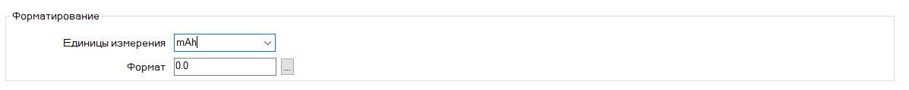
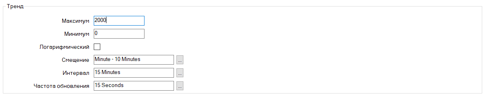
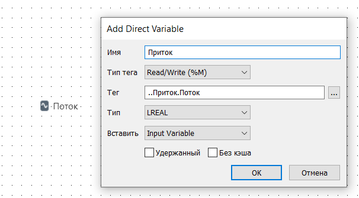
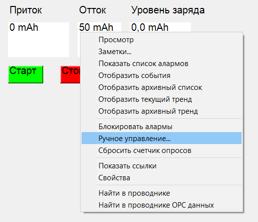
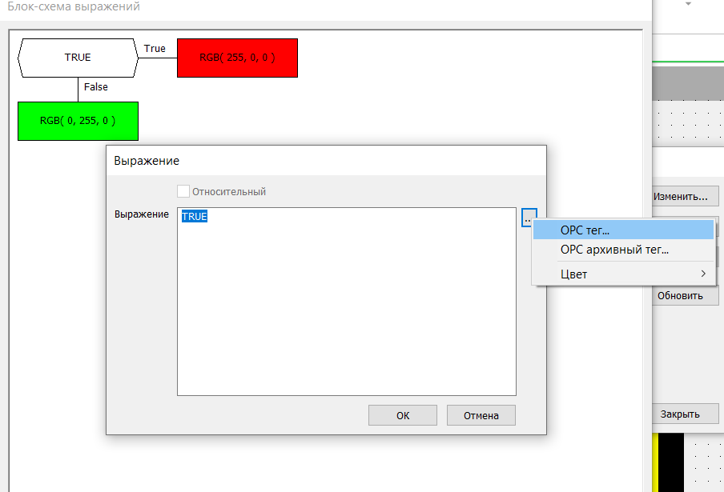

Лабораторная работа по Geo SCADA
Формулировка задания:
Создать автоматизированную систему подзарядки батареи. Батарея разряжается с постоянной скоростью. При достижения минимального уровня заряда, будет включаться генератор, который будет заряжать батарею. При достижения максимального уровня заряда, генератор будет выключаться. Система работает автоматически.
Параметры:
Объем батареи-2000 mAh;
Скорость разрядки- 50 mAh;
Скорость зарядки -100 mAh.
Для начала запускаем ярлык
Service Manager (рисунок 1), и напротив Geo SCADA Expert Database Server нажимаем на зеленый треугольник, сворачиваем окно. Сервер запущен.
Рисунок 1 – Запуск сервера
Демоверсия ограничивается двумя часами, по истечению этого времени нужно повторить процедуру запуска сервера.
Далее запускаем ярлык
ViewX. Для входа в систему нужно будет указать логин и пароль которые были указаны во время установки программы. Для этого в верхнем левом углу нажимаем на кнопку
Войти (рисунок 2).
Рисунок 2 – Вход в систему
В появившимся окне вводим логин и пароль и нажимаем
Войти (рисунок 3).
Рисунок 3 – Ввод логина и пароля
Вход в систему выполнен.
Для создания папки проекта нужно слева в дереве системы нажать ПКМ на
Local и выбираем
Создать новое/Группа (рисунок 4). В дереве создается папка с названием
Новый(ая) группа. Переименовываем её в любое название, нажимаем ПКМ на “Новый(ая) группа” выбираем
Переименовать. (рисунок 5). В данной папке будет находиться вся лабораторная работа. Также в этой папке по умолчанию есть файл
Default – это будущая мнемосхема проекта.
Рисунок 4 – Создание новой папки
Рисунок 5 – Переименование папки
Далее с помощью аналоговой точки зададим уровень воды. Для этого ПКМ нажимаем на основную папку и выбираем
Создать новое/Внутренние/Аналоговая точка (рисунок 6). Переименовываем ее в
Уровень заряда.
Рисунок 6 – Создание Аналоговой точкии
Далее дважды кликаем на созданную аналоговую точку и в появившемся окне заполняем основные свойства. Заполняются только вкладки
Аналоговая точка, Архив, Ручной. Во вкладке
Аналоговая точка вводятся данные об объеме батареи, формат измерения уровня заряда и тренды (рисунки 7–9).
Рисунок 7 – Заполнение блока Пределы алармов
В этом блоке вносятся данные об объеме батареи (2000)– Максимум, Верхний аварийный (1950) – уровень, при котором генератор выключается, Верхний предупредительный (1900), Нижний предупредительный (100), Нижний аварийный (50) – уровень, при котором генератор включается.
Далее в блоке
Форматирование указывается формат измерения уровня заряда (рисунок 8), единица измерения – mAh.

Рисунок 8 – Заполнения блока Форматирование
Блок
Тренд заполняется для того, чтобы можно было просматривать тренды далее (рисунок 9).

Рисунок 9 – Заполнение блока Тренд
Вкладка
Архив отвечает за фиксацию истории, чтобы в дальнейшем можно было посмотреть всю историю изменения заряда (рисунок 10).
Рисунок 10 – Заполнение блока Архив
Рисунок 11 – Заполнение блока Ручной
После заполнения всех нужных вкладок сохраняем изменения и закрываем окно.
Далее создаем точку входного потока заряда. Для этого создадим папку
Приток. Нажимаем ПКМ на основную папку и выбираем
Создать новое/Группа и переименовываем ее в
Приток. Внутри созданной папке будет файл
Default, удаляем его т. к. он не пригодится в дальнейшем, ПКМ
Удалить (рисунок 12).

Рисунок 12 – Удаление файла
Рисунок 13 – Окно подтверждения удаления
Далее нажимаем ПКМ на папку
Приток и выбираем
Создать новое/Внутренние/Аналоговая точка, переименовываем ее в
Поток. Далее открываем файл
Поток и заполняем свойства в соответствии с рисунками 14–18.
Рисунок 14 – Заполнение блока Пределы алармов
Рисунок 15 – Заполнение блока Форматирование
Рисунок 16 – Заполнение блока Тренд
Рисунок 17 – Заполнение вкладки Архив
Рисунок 18 – Заполнение вкладки Ручной
После всех заполнений сохраняем и закрываем окно.
Далее создадим точку выходного потока. По сути, она точно такая же, как и точка входного потока. Поэтому просто копируем папку
Приток, вставляем ее в главную папку и переименовываем в
Отток(рисунки 19,20).
Рисунок 19 – Копирование папки Приток
Рисунок 20 – Вставка папки Приток
Далее создадим файлы генератора, для этого создадим новую папку и назовем её
Генератор. В ней удалим файл
Default, и создадим дискретную точку. ПКМ
Создать новое/Внутренние/Дискретная точка, и назовем ее
Заряд (рисунок 12).
Рисунок 21 – Создание Дискретной точки
Далее открываем файл и заполняем блоки
Дискретная точка, Архив, в соответствии с рисунками 22–24.
Рисунок 22 – Заполнение блока Состояние
Рисунок 23 – Заполнение блока Тренд
Рисунок 24 – Заполнение вкладки Архив
После заполнения сохраняем и закрываем окно. Далее копируем файл
Заряд, вставляем его в папку
Генератор и переименовываем в
Контроль. Открываем его и во вкладке
Дискретная точка в блоке
Состояние меняем
Закрытый на
Отказ,
Запущенный на
Открыть (рисунок 25). Сохраняем и закрываем окно.
Рисунок 25 – Замена данных
Далее в папке
Генератор создадим файл, который отвечает за производительность генератора. ПКМ
Создать новое/Параметр/Двойной и переименовываем во
Вместимость (рисунок 26).
Рисунок 26 – Создание параметра
Открываем файл и во вкладке
Double вписываем значение 100 (рисунок 27). 100 mAh – скорость подачи тока.
Рисунок 27 – Заполнение вкладки Double
Сохраняем изменения и закрываем файл.
Далее создадим блок-схемы для связи генератора с входным потоком. Для этого создадим новую папку и переименуем её в
Логика. Удалим из неё файл
Default. Создадим в ней блок-схему, ПКМ
.Создать новое/Логика/Диаграмма функциональных блоков (рисунок 28), и переименовываем её в
Контроль генератора.
Рисунок 28 – Создание Диаграммы функциональных блоков
Открываем её и перетаскиваем в неё из дерева из папки
Генератор файла
Заряд, заполняем согласно рисунку 29 и нажимаем
Ок.
Рисунок 29 – Заполнение блока Заряд
Далее из этой же папки переносим файл
Вместимость и заполняем в соответствии с рисунком 30 и нажимаем
Ок.
Рисунок 30 – Заполнение блока Вместимость
Далее перетаскиваем из дерева из папки
Приток файл
Поток и заполняем в соответствии с рисунком 31, нажимаем
Ок.
Рисунок 31 – Заполнение блока Поток
Далее добавляем из той же папки файл
ЮКонтроль и заполняем в соответствии с рисунком 32, нажимаем
Ок.
Рисунок 32 – Добавления блока Контроль
Далее ПКМ в любой области и выбираем
Преобразование типов/BOOL/BOOL_TO_INT (рисунок 33). Точно также выбираем
Функции/Arithmetic/MUL (рисунок 34),
Преобразование типов/INT/INT_TO_LREAL (рисунок 35) и
Функции/Bitwise/Boolean/AND (рисунок 36).
Рисунок 33 – Добавления блока BOOL_TO_INT
Рисунок 34 – Добавление блока MUL
Рисунок 35 – Добавление блока INT_TO_LREAL
Рисунок 36 – Добавления блока AND
Далее собираем схему, сохраняем и закрываем окно (рисунок 37).
Рисунок 37 – Полученная схема
По такому же принципу создается блок-схема для связи уровня заряда с входным и выходным потоками. В папке
Логика создадим еще одну
Диаграмму функциональных блоков и переименуем её в
Симуляция. Открываем файл и перетаскиваем в него из папки
Приток файл
Поток и заполняем согласно рисунку 38.

Рисунок 38 – Добавления блока Поток
Добавляем файл
Поток из папки
Отток и заполняем в соответствии с рисунком 39.
Рисунок 39 – Добавления блока Отток
Добавляем из дерева файл
Уровень заряда и заполняем в соответствии с рисунком 40.
Рисунок 40 – Добавления блока Уровень заряда
Еще один блок
Уровень заряда добавляем из верхней строки, в появившемся окне нажимаем
Add Input Variable (рисунок 41).
Рисунок 41 – Добавления блока Уровень заряда
Затем нажимаем ПКМ и добавляем блоки SUB и ADD следующим образом,
Функции/Arithmetic/SUB(ADD) (рисунок 43).

Рисунок 42 – Добавление блоков SUB и ADD
Собираем схему и сохраняем её. (рисунок 43).
Рисунок 43 – Полученная схема
Этой блок-схемой мы получаем разницу между входным и выходным потоком прибавляем к уровню заряда и получаем текущий уровень заряда.
Теперь создадим блок-схему связи предельных уровней и вкл/выкл генератора. Перетаскиваем блок
Уровень заряда из верхнего списка два раза и в появившемся списке выбираем
Add Input Variable. Затем из дерева перетаскиваем файл
Уровень заряда. Нажимаем на троеточие, выбираем
OPC Tag (рисунок 44), в появившемся окне выбираем
$Config/LowLowLimit (рисунок 45) и нажимаем
Ок.
Рисунок 44 – Заполнение блока Минимальный уровень заряда
Рисунок 45 – Выбор тега
Повторяем данную процедуру еще раз, только вместо тега
LowLowLimit выбираем тег
HighHighLimit (рисунок 46).
Рисунок 46 – Выбор тега
Далее перетаскиваем из папки
Генератор файл
Заряд и заполняем в соответствии с рисунком 47.
Рисунок 47 – Заполнение блока Заряд
Затем нажимаем ПКМ в любом месте и выбираем
Функции/Comparison/LE(GE) (рисунок 48), и
Функциональные блоки/SR (рисунок 49).
Рисунок 48 – Добавления блока LE
Рисунок 49 – Добавление блока SR
Собираем схему, сохраняем и закрываем окно (рисунок 50).
Рисунок 50 – Получившиеся схема
Эта блок-схема сравнивает минимально и максимально допустимые уровни с текущим и решает включать или выключать заряд.
Теперь можно визуализировать собранные схемы. Для этого в главной папке открываем файл
Default, в появившиеся окно из главного дерева перетаскиваем файл
Поток из папки
Приток и выбираем согласно рисунку 51.
Далее перетаскиваем папку
Приток и выбираем в соответствии с рисунком 52.
Тоже самое делаем с файлом
Приток, папкой
Отток и фаqлом
Уровень заряда, только последний добавляем 2 раза, первый в качестве значения, второй в качестве названия.
Рисунок 51 – Добавления значения входного потока
Рисунок 52 – Добавлении имени входного потока
Создадим кнопки
Стоп и
Старт для остановки генератора (когда он работает в цикле) и запуска генератора (после остановки кнопкой СТОП). В верхней панели во вкладке
Графики выберем
Кнопка (рисунок 53) и создадим в любом месте.
Рисунок 53 – Создание кнопок Старт и Стоп
Открываем и настраиваем кнопку в соответствии с рисунками 54–58.
Рисунок 55 – Переименование кнопки

Рисунок 55 – Выбор конфигурации действия
Рисунок 56 – Выбор файла
Рисунок 57 – Выбор управления
Рисунок 58 – Выбор значения
Рисунок 59 – Завершение настройки кнопки
Рисунок 60 – Выбор цвета кнопки
Копируем кнопку и заменяем в окне
Выражение 1 на 0, а также меняем цвет.
Чтобы проверить работоспособность системы выключаем режим редактирования в окне
Default (рисунок 61), в поле
Оттока вводим значение (рисуноки62,63) и нажимаем кнопку
Старт.
Рисунок 61 – Отключение режима разработчика

Рисунок 62 – Выбор ручного ввода
Рисунок 63 – Ввод значения оттока заряда
После нажатия на кнопку
Старт включается генератор т. к. уровень заряда 0, после достижения уровня заряда 2000, генератор отключается, затем при достижении уровня заряда 0 генератор снова включается. Система работает исправно.
Создадим анимацию заполнения батареи. Для этого в главном дереве найдем папку
Symbol Library, развернем её и найдем файл
Symbol Library Index. (рисунок 64), чтобы пользоваться библиотекой нужно отключить режим редактирования, откроем его и найдем окно
Icons (рисунок 65), открываем его и находим окно
Battery Empty (рисунок 66). Кликаем на символ и в дереве появится путь, где находиться этот файл (рисунок 67). Закрываем библиотеку.
Рисунок 64 – Путь к Symbol Library Index
Рисунок 65 – Выбор Icons
Рисунок 66 – Выбор Battery Empty
Рисунок 67 – Путь к Battery Empty
Далее открываем файл
Battery Empty, в появившемся окне присутствует наша батарея (рисунок 68), копируем её и вставляем в файл
Default. Подредактируем её размер чтобы выглядело лучше (рисунок 69). Теперь с помощью простых инструментов (рисунок 70) создадим два прямоугольника размером равному размеру внутреннему пространству батареи (рисунок 71).
Рисунок 68 – Батарея
Рисунок 69 – Отредактированная батарея
Рисунок 70 – Инструмент прямоугольник
Рисунок 71 – Созданные прямоугольники
Теперь переместим оба прямоугольника во внутреннюю полость батареи и отредактируем. У первого поменяем только цвет с серого на белый (рисунок и 72,73), а у второго поменяем цвет с серого на желтый и подключим его к блок-схеме.
Рисунок 72 – Свойства фигуры
Рисунок 73 – Замена цвета фигуры
Для этого нажимаем ПКМ на желтый прямоугольник и выбираем
Анимация (рисунок 74). В появившемся окне выбираем
SizeMax и открываем его. Нажимаем на троеточие (рисунок 75), выбираем
OPC Tag, в появившемся окне выбираем
$Config/FullScale (рисунок 76), нажимаем
Ок, в следующем окне нажимаем
Ок.
Рисунок 74 – Выбор Анимации
Рисунок 75 – Выбор SizeMax
Рисунок 76 – Выбор ОРС тега
Рисунок 77 – Выбор тега FullScale
Далее выбираем
SizeMin (рисунок 75), тег выбираем по пути
$Config/ZeroScale (рисунок 76). Затем выбираем
SizeVal (рисунок 77), тег по пути
Уровеньзаряда/CurrentValue (рисунок 78).
Рисунок 78 – Выбор SizeMin
Рисунок 79 – Выбор тега ZeriScale
Рисунок 80 – Выбор SizeVal
Рисунок 81 – Выбор тега CurrentValue
В конце настроим анимацию заполнения батареи, для этого откроем желтый прямоугольник и во вкладке
Общее в блоке Динамическое изменение размера поставим
Снизу вверх (рисунок 82). Закроем окно. Выходим из режима редактирования и проверяем работу анимации (рисунок 83).
Рисунок 82 – Настройка анимации
Рисунок 83 – Результат работы анимации
Добавим изображение генератора. Для этого откроем файл
Symbol Library Index и выберем в нем окно Motors (рисунок 84), откроем его и выберем в нем окно Generator Portable (рисунок 85), открываем его из дерева, копируем и вставляем в файл, где наша система (рисунок 86).
Рисунок 84 – Выбор Motors
Рисунок 85 – Выбор Generator Portable

Рисунок 86 – Generator Portable
Далее с помощью простых инструментов соединим генератор и батарею, и подключим генератор к блок-схеме. Для этого нажимаем ПКМ по генератору и выбираем Анимация. В появившемся окне выбираем PolyFill/FillColor и нажимаем Блок-схема (рисунок 87). В окне нажимаем ПКМ на прямоугольник и выбираем Вставить (рисунок 88).
Рисунок 87 – Выбор FillColour
Рисунок 88 – Вставка блок схемы
Появляются три прямоугольника, открываем правый прямоугольник и в появившемся окне нажимаем в соответствии с рисунком 89.
Рисунок 89 – Выбор цвета
Тоже самое делаем с нижним прямоугольником, только вместо красного цвета выбираем зеленый. Далее открываем центральный прямоугольник и выбираем ОРС тег/Генератор/Заряд (рисунки 90,91).

Рисунок 90 – Выбор ОРС тега
Рисунок 91 – Выбор тега Заряд
Далее в окне Выражение пишем AND и выбираем ОРС тег/Генератор/Контроль (рисунок 92).
Рисунок 92 – Выбор тега Контроль
Рисунок 93 – Итоговая схема
Нажимаем Ок и закрываем окно Анимации. Таким образом, генератор, когда работает, меняет цвет на красный, а когда отключен – он зеленого цвета. Сохраняем и проверяем работу системы.
Рисунок 94 – Работа анимации
Сохраняем файл Default и закрываем его.
В конце экспортируем файл с нашей работой, для этого нажимаем ПКМ на корневую папку, где находится проект и выбираем Экспорт (рисунок 95). В появившемся окне выбираем куда хотим сохранить проект и нажимаем Сохранить (рисунок 96).
Рисунок 95 – Экспорт проекта
Рисунок 96 – Выбор места экспортирования
Рисунок 97 – Подтверждение удачного экспорта
 GeoSCADA Expert
GeoSCADA Expert